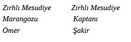
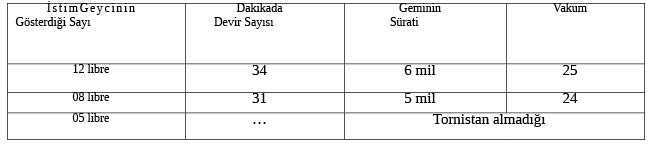

ON BİRİNCİ BAB
Top denemesi- Ağır suçlar- Acı gerçekler.
Donanmaca bilinen gereksinme dolayısıyla Tersane-i Ãmire’de yapılıp gönderilen krup mermilerinin Zırhlı Aziziye Firkateyni’nde 13 Mayıs sene 313’te [1897 senesi 13 Mayıs’ında] Bahriye Nezareti’nin emriyle gereken denemesi yapılmış ve deneme sırasında Donanma Kurmaylığı ile görevlendirilen Hofe Paşa ve İkinci Fırka Kumandanı Mirliva Hayri Paşa ve öteki deniz kumandanları bulunmuştur. Deneme sonucu olarak Bahriye Nezareti’ne sureti aşağıda yazılı telgrafname gönderilmiştir:
Tersane-i Âmire imali olarak gönderilip denemesi emir olunan mermilerden iki tanesi bugün Aziziye Firkateyni’ndeki geçende imal ve denemesi arz olunan on beş santimetrelik krup topu ile Hofe Paşa ve diğer kumandanlar ve saire önünde ateş edildikte topun alt yivlerini topu kullanılmayacak derecede zedelediği görülmüş ve bu mermilerin kullanılış şekli ve bunlarla ateş edilmesi tehlikeli görüldüğü kendisinin verdiği rapordan anlaşılmış olmakla arz ederim.
Fi 17 Mayıs sene 313 [1897 senesi 17 Mayıs’ında]
Bu mermi denemesi hakkında Hofe Paşa’nın verdiği fenni rapor aşağıda arz edilmiştir:
Tersane-i Âmire’de imal edilmiş olan güllelerin tarafımdan dışardan muayesi yapılarak kurşunları düzensiz ve sanatsız bir surette bulunduğu gibi bazılarının üzerinde dahi kısmen kurşunsuz yerler bırakılmış olduğu ve esasen karıncalı dökülmüş olduğu muayenemden anlaşılmış olup ve daha sonra Aziziye Firkateyni’nin sancaktan iki topu ile atılan ve yine Tersane-i Âmire imalinden olan bir sert döküm güllenin topun mecefindeki [oyuğundaki] alt yivlerinden içi zedelenmiş ve adeta oyuk yüzü ile bırakılmış olduğu için bu güllelerle ateş edilmesinde tehlike ve birçok kazalar oluşacağı açıktır. Bu bapta hiçbir sorumluluğu yükümlenemeyeceğimin açıklanması konusunda bir kıta raporumu yazıp kumandanlık yüksek makamına sunulmuştur.
Fi 17 Mayıs sene 313 [1897 senesi 17 Mayıs’ında]
Donanma-yı Hümâyun Erkân-ı
Harbiyesine Memur Ferik
Fon Hofe
Bu rapor bir yabancı memur tarafından verildiği için Bahriye Nazırı’nın bunu kötüye yorarak kabul etmemesi düşünülemeyeceğine göre kendi tarafından Donanma-yı Hümâyun’daki top işlerini tamir etmeye düzeltme ile görevli olarak Kal’a-yı Sultaniye’ye gönderilen ve Nezaret’te Tersane-i Âmire top fabrikasının en kuvvetli âmiri addedilen Kolağası Hüsnü Efendi’den bir rapor istenilmiştir ki, sureti aşağıdadır:
Kumandanlığın yüksek emirleri üzerine Aziziye Firkateyni’nde ikinci kez denemesi yapılan on santimetrelik topun muayenesinde barut hazinesinden tahminen 30 pus ilerde dikey ve yatay şişhane yivlerinden bazılarının tahrip edilmiş bulunduğu anlaşılmıştır. Bu durumun başlıca oluşu ise mermiler için gereken muvazenet bahislerinin [yeterli dengelerin] civa içinde tecrübeleriyle üzerindeki kurşun sarmaların düzensizliği halita mürekkebatlarında [eriyik karışımında] dahi biraz sertlik bulunması ve adı geçen mermilerin yuvarlak yüzü yeterince temiz ve düz bulunmaması ve konik kısmının da sıfırla bitecek derecede açılı olmamasından vukua gelir bir keyfiyet olduğu, bununla birlikte merminin mahreki yöresinde ve uçuş anında baruttan oluşur bir keyfiyet olduğu, bununla birlikte bu ve uçuşu anında baruttan çıkan gazın etkisiyle kurşun sarma bazı noktaları açılarak “vindiç” denilen hava payının genişlemesi ve mermi dengesiz bir şekilde sekerek uçması hasebiyle esasen mercinin dış yüzü sert bulunduğundan bu yivler ile temasa gelerek yivlerin tahribine tek sebep olduğu anlaşılarak bu bir kıta rapor düzenlenip kumandanlığa sunulmmuştur.
Fi 17 Mayıs sene 313 [1897 senesi 17 Mayıs’ında]
Top Fabrikası Müdürü
Hüsnü
İşte denemesine ilişkin ayrıntıları böyle olan ve Tersane-i Âmire mamûlatından olan güllelerin fen ve sanata uymayan şu perişen hallerinden imalat-ı Bahriye görevlilerinin ne halde bırakıldıkları ortaya çıkar. Bir gülleyi binlerce lira değerinde bir topu mahv ve berbat edecek derecede noksan ve yanlış yaptıkları göz önünde tutulursa top ve top kızağı yapımında ne derece büyük noksan ve yanlış yapacakları ve buna göre devlet hazinesini ziyadesiyle zarara sokacakları anlaşılır.
Donanmada sürekli ortaya çıkan hallerin müşkilatından kurtulmak imkânsız idi. Ardı arası kesilmeksizin bir dert çıkıyor, bugün torpido istimbotlarından bir ikisinin önemli makina ve kazan işleri, yarın savaş gemilerinden birkaçının önemli sorunları raporda bildiriliyordu.
“Süvarisi bulunduğum Tayyar adlı torpido istimbotunun Dersaadet’ten çıkış ve hareketinden beri baş ve kazan bölmelerinin sintine suları birçok kez temizlendiği halde suyun durmadan geldiği ve yapılan son muayenede kazan altı ve önü ve gerisi taraflarıyla sancak ve iskelede birkaç yerinden su girdiği görülmüş ve bu husus Dersaadet’te raporla Nezaret makamına bildirilmiş olduğu ve bununla birlikte bir sac levhasının dalgalanmakta kumandanlık makamınca da bilindiği üzere bir kıta rapor tanzim ve bilgileri için sunuldu”, deniliyordu.
Bu raporu önemi nedeniyle makina ve kazan işlerinin tamirine görev verilerek donanmaya Bahriye Nezareti tarafından gönderilmiş olan çarkçı kaymakamı Donanma-yı Hümâyun seyyar torpido enspektörü ve Tersane-i Âmire’de fabrika formeni Hüseyin Bey’e gerekli muayenesinin yapılarak sonucunun bildirilmesi için havale ettim. Hüseyin Bey ve donanma kazancı başısı Vehbi Efendi ortaklaşa olarak bu rapora aşağıdaki derkenarı eklemişlerdir.
Tayyar torpido istimbotu süvarisi tarafından verilen bu raporda açıklanan durumun incelenmesi için adı geçen istimbotun gerekli muayenesi yapıldı. Gerçekten kazan altı ve önü ve geri taraflarıyla sancak iskele birkaç yerden su göstermekte olduğu tarafımızdan görülmüş ve bunun nedeni ise bu kez havuzda levhalar değiştirilmekte iken perçin işlerinin noksan ve usulüne uygun olmayarak yapılmasından doğmuş olup istimbot havuza alınmadıkça bu suyun burada girişini engellemek kabil olamayacağı gibi sintinede bulunan çimento parçalanarak mevcut olan su sebebiyle çimentoların da yenilenmesi mümkün olamayacağı sizce de buyrulmak üzere işbu yere şerh ve izah kılındı. Olbapta.
Fi 24 Mayıs sene 313 [1897 senesi 24 Mayıs’ında]
Bu nedenle bu istimbot İstanbul’a gönderilmiştir. Fakat süvarisi Yüzbaşı Mehmet Emin Efendi kahır ve zulme uğrayarak kaptanı bulunduğu istimbotun anlatılan tehlikeli durumunu va bozukluklarını resmi şekilde ilgili makama bildirdiği ve istimbotun haraplığının gizemini meydana çıkardığı için Tersane-i Âmire’deki büyük zindana atılmış ve namuslu askerlere yakışır surette askerlik görevini yapıp gemisinde saklanması herhalde sorumluluk getirecek tehlike için canilere yapılacak şekilde ağır cezaya çarpılmıştır.
Temmuz’un yirmi altısında Zırhlı Hamidiye Firkateyni süvarisi Miralay Rasim Bey tarafından aşağıdaki rapor alınmıştır.
Rumi ayın yirmi beşinci günü saat onda şiddetle poyraz rüzgârı esmekte iken grandi direğinden ağaç parçaları güverteye düşmekte olduğu nöbetçi kaptan tarafından görülerek yukarıya bakıldıkta grandi çanaklığının altında ve sancak kıç tarafında bulunan maunanın üç kadem yeri dokuz pus çanaklıktan aşağıya doğru ayrılarak sancak tarafına meyl etmiş olduğu görülmekle gerekli muayenesi yapılarak Nordenfeltler aşağıya […] donatılarak bu direk subye haline getirileceği ve şu günlerde hareketimiz kararlaştırılmış olduğundan uygun hava ile saçak altından ilk gidilecek olan limana kadar grandi direği subye donanım halinde gidilerek orada arması soyulup icabına bakılmak üzere gerekli olan maunaların getirilmesi tarafımdan uygun bulunmakla olbapta.
Bu rapordan direğin çanaklık kısmında bulunan ağaçların bir ârızası olduğu ve bir geminin direği ise önemli olduğu ve gerçek durumun açıklanması için donanma marangozu ile arma devrine havale ettim. Onlardan muayene sonucu olarak verilen rapor aşağıdadır:
Zırhlı Hamidiye Firkateyni hükâyununun grandi direği mahunlar tamamıyla çürük olup ve gurçete kollarında başkolunun sancak tarafı da bir kadem çürük bulunmakla tamir kabul edemiyeceğinden yenisi ile değiştirilmesi gerektiği için […] üzerine vurularak boşları alınıp mürsile ve çubuğun dahi kulombere […] edilmesi mistre bosa ve istriseleri kurçete kollarına bindiği gibi bütün kuvvet maunalara basmakta, Allah saklasın, denizli bir havada tehlike beklenebileceğinden gabya sereninin alabora ve mistrenin arya edilerek grandi direğinin yeni maunalar ile kurçete kolu gelinceye kadar sübye donanım haline getirilmesi gerekmekte olmakla ol bapta.
Fi 26 Temmuz sene 313 [1897 senesi 26 Temmuz’unda]

Durumun önemi dolayısıyla gereği hemen yapılmışsa da bu halde savaşa gitmek üzere her türlü savaş malzemesi tamamlanmış olduğu Bahriye Nezareti tarafından şiddetle iddia edilen ve en yeni gemimiz olan Hamidiye Firkateyni Hümâyunu’nun direk kısmının bile çürümüş olması Bahriye Nezareti’nin en hafif deyimle aymazlığına kesin bir kanıt oluşturmaktadır.
Temmuz’un on üçü tarihinde de Zırhlı Aziziye Firkateyn-i Hümâyunu süvarisi Miralay Rıza Bey ve hesap memuru Kolsâni [İkinci Kolağası] Hamdi Efendi tarafından bir rapor verilerek adı geçen geminin selamet kılavuzu olan hedefli yol pusulasının mıknatıslık hassasını yitirmiş olduğu ve bilinen yönleri gösteremediği bildiriliyordu. Savaşa gidecek bir savaş gemisi için değil en sıradan bir tekne için bile bu konu ne kadar büyük bir noksan ve kumandana verilen savaş gemisinin sefer donanımı ve savaş malzemesi bakımından orta derecede dahi olamadığı gerçeğini açıklayan bir hüccet [belge] idi.
Orhaniye ve Hıfz-ı Rahman firkateyn ve korvetlerinde yapılan ateş denemesinde hasara uğrayan bütün top kızakları Mayıs’ın otuzuncu günü Beşiktaş Vapuru’na konularak İstanbul’a gönderilmiştir.
Donanma-yı Şahâne’de sürekli çıkan bu müessif [üzücü] olaylar ile birlikte ve cünûd-u mülükânelerinin intizamat ve talimat-ı lâzime hususunda kesb-i terakki etmesine çalışmak [subayların görevleri konusunda geliştirilmesi] önemli bir görevd. Bu nedenle Boğaz Muhafızı Mazhar ve Abdurrahman Paşaların da oyları alınarak Kal’-ayı Sultaniye Boğazı’nda Maydıs Köyü’nün doğu kısmındaki boş dağ sırtına deniz kıyısı ile bir hizada beyaz boya ile tam büyüklükte bir gemi yapılarak sabit bir düşman gemisi diye düşünülerek Osmanlı gemileri tarafından sıra ile nişan ve ateş talimi yapılmakta idi. Mayıs’ın on dokuzuncu günü Kepez Limanı’nda bekleyen Osmanlı savaş gemilerinden Hıfz-ı Rahman korvetine sıra gelmekle bu limandaki gemilere kumanda eden Mirliva Mehmet Paşa’ya Hıfz-ı Rahman korvet-i hümâyununu alarak Nâra Limanı’na gelmesi için bir gün öncesinden bilgi verilmiş ve Paşa hastalandığından söz ederek mazeret beyan ettiğinden ertesi sabahı Hıfz-ı Rahman korveti Nâra Limanı’na gelmiş ve adı geçen dağ eteğindeki hedef gemi resmi yine düşman gemisi farz edilerek Hıfz-ı Rahman bunu tahrip ile görevlendirilmiş ve zaten bu geminin topları Marmada’da denenmiş olduğundan düşman karşısındaki toplarını birinci hedefe atması emri verilmişti. Donanmada görevli Ferik Hofe Paşa ve İkinci Fırka Kumandanı Mirliva Hayri Paşa ve sair büyükler ve fen erkânı bu talimin yapılması sırasında korvetin güvertesinde hazır bulunmuşlar ve savaş fenni açısından hücum ve ateş etmek için kendi kararına bırakılan gemi süvarisinin hareketleri ve manevraları gözlenmiştir. Adı geçen gemi birkaç türlü hareket ve saldırı ile sahile yaklaşarak toplarını ateşlemiş ve talimin sonunda yapılan gerekli muayeneden baş taraftaki hareketli top kulesi içine Tersane-i Âmire imalat görevlileri tarafından düzenlenen ve konulan ve “Kavendişin” denilen kızak yanakları oynayarak topun bakırlarını parçalamış olduğu için bu bakırların tamir için kesinlikle Tersane-i Âmire’ye gönderilmesi gerektiği anlaşılmış ve bu talim sırasında geminin makinasında seyir ve harekete engel olan bazı hasarlar olduğu anlaşılmış ve bunların geçici olarak tamir ve düzeltilmesi için geminin bir süre Nâra Limanı’nda bekletilmesi zorunluluğu hasıl olmuştur. Ertesi günü gemi süvarisi Kaymakam Hüseyin Bey tarafından verilen raporun bir sureti aşağıdadır:
Dün yapılan ateşli talimde süvarisi olduğum Hıfz-ı Rahman korvetinin baş kulesinde bulunan yüz elli librelik Armstrong toplarından baş topunun bakırlarını kırmasıyla ikinci topun dahi kavendişini bir pusu iki linye kadar geriye sürdüğü ilişikte sunulan topçu kumandanının raporundan anlaşılacağı üzere birinci topun […]kastanyolası24 zaman ile eskiyip gereken işi hakkıyla yapamayıp top geriye ziyadesiyle seyirdim vermesinden ve ikinci topun kavendişi dahi bu kez yapılan tamirde cıvatalarının istenilen derecede güçlendirilmemesinden ileri gelmiş bir hal olup tamirleri ciheti Hüsnü Efendi ile görüşülerek verilen kararda Aziziye ve Wosmaniye Firkateyn-i Hümâyunlarındaki uskurlar25 ile tamir edilecek idiyse de bugün Beşiktaş Vapuru ile kundak ve arabaları geldiğinden kendilerine gerekli olduğu bildirilerek veremeyeceklerinden başka şekilde şimdilik bir çare yalnız ya İstanbul’dan gelecek koğuşlara [?] yahut adı geçen firkateynlerin işlerinin sonunu beklemek olduğu düşünüldüğü arz (Rehin-i ilm-i âli-yi kumandanlîleri)
Fi 20 Mayıs sene 313 [1897 senesi 20 Mayıs’ında]
TOPÇU KAPTANINDAN GEMİ SÜVARİSE VERİLEN RAPOR SURETİ
Dün yaptığımız ateşli nişan taliminde baş kulesi içine tabiye olunmuş [yerleştirilmiş] yüz elli librelik Armstrong toplarının kırılması hakkında Akdeniz Umum Kumandanlığı yüksek makamından size gönderilen ve tarafıma havale edilen tezkerede adı geçen topların hangi nedenle kırıldığı ile ne suretle tamiri mümkün olabileceği cümle-i emr-ü ferman-ı kumandanîden [kumandanlıktan] sorulmuş olmakla bu konudaki durum aşağıda arz olunmuştur. Şöyle ki:
Adı geçen toplar geminin Avrupa’dan satın alındığında [onlarla] birlikte gelmiş otuz yıla yakın bir zaman olduğundan zaman geçmesi nedeniyle birisi tazyik-i mengene ve […] kastanyole manivelası aşınmış olmak ihtimali olmalıdır ki, topun […] muhafaza edemeyerek sınırı geçip batırları kırdığı ve ikincisi ise gerçekte adı geçen mengene ve manivela diğeri gibi olmayıp görevini yapmış ise de bunda da bu kez geminin tamirinde bu kulenin topları dışarıya çıkarılarak güvertesi değiştirildiği sırada kızakların altındaki kavendişin ağaçları yeniden konulmuş olup bu ağaçlar geminin birçok işçi tarafından çok acele tamiri sırasında birkaç saplama cıvata ile bağlanmış olduğundan bu cıvatalar sağlam olarak güvertenin altındaki şahtan dapi geçerek layıkıyla bağlanmadığından bu […] mukavemet edemiyerek cıvatalar eğilip ağaçlar yerlerinden […] iki liniye oynadığı gerisindeler demir paraçol dahi kırılmasına sebep olmuş olduğu ve tamirata gelince toplar askıya alınır ise top fabrikası görevlisi Hüsnü Efendi [ile] birlikte yapılan muayene sonucu buraca tamiri mümkün olduğu ve adı geçen topların kaldırılması için gerekli araç ve gereçler gemide yok ise de Zırhlı Aziziye ve Osmaniye’de on beş santimetrelik toplara mahsus uskurular ile asılabileceği Hüsnü Efendi tarafından açıklanmış olduğu için o gemiler süvarilerine başvurduğumda onların da […] Dersaadet’ten gelen Beşiktaş Vapuru ile kundak ve arabaları gelmiş olduğundan veremeyeceklerini bildirmiş olmakla bu raporu bendegânemin taraf-ı behiyyelerine cevaben arza ictisar eylerim [cevap olarak arz ederim].
Olbapta 20 Mayıs 313 [20 Mayıs 1897]
Hıfz-ı Rahman Süvarisi
Kaymakam Hüseyin
Birkaç kez “Kepez”deki savaş gemilerinin durumu ve düzenlerini teftiş ve muayene için istimbot ile oraya gitmiş ve her birini ayrı ayrı dolaşmış idim. Bu teftişler sırasında Orhaniye Firkateyni toplarında bazı önemli kusurlara rastladığımdan bu gemide bulunan ve Marmara’da Orhaniye, Hıfz-ı Rahman, Mansure firkateyn, korvet ve Hudeyde, Mekke ve Medine vapurlarının top denemelerin yapan Mehmet Paşa’dan oradaki savaş gemilerinde ne gibi eksikler ve malzeme varsa süratle gereğinin yapılması için hemen raporla bildirmesini ve özellikle bu savaş gemilerinin Marmara’da yaptıkları ateş denemelerinde elde ettikleri gizli sonuçlar hakkında rapor vermesini bildirdim. Fakat bu konudaki talimatımı yerine getirmemek için direnmesinden başka bir şey almak mümkün olamamasına ve Orhaniye’nin Nara’da yapılan ateş denemesinde kendisinin de bulunması istenildiği halde temaruz [yalandan hastalanma] etmesine pek iyi bir anlam verilememiş ve özellikle Hıfz-ı Rahman’ın en son yapılan ateş denemesinde Marmara’daki denemeye tamamıyla karşıt ve üzücü bir sonucun ortaya çıkması sadakat ve iyi niyetle hizmete yönelmiş zihinleri birtakım zanlar ve kuşkularla karıştırmaktan uzak kalmadığı için Orhaniye Firkateyni’nin toplarını da donanma büyükleri ve fen erkânı önünde bir kez daha denemeye ihtiyaç duyulmuş ve bunu yapmak, hem de donanmada Fen Heyeti tarafından verilecek savaş talimatı programı hükümlerine göre gemide bir ateş talimi yapmak üzere Mayıs’ın yirmi beşinci günü Kepez’de Orhaniye Firkateyni’nin ikinci ateş denemesi yapılmıştır.
Bu denemede ilerde [verilecek] muayene raporlarındaki ayrıntılardan anlaşılacağı üzere güverte ve batarya topları ile yirmi bir santimetrelik kıçtaki büyük top artık ateş edemeyecek derecede arızaya uğrayarak Bahriye imalatındaki büyük eksiklikler ve önemli yanlışlıklar bir daha ortaya çıktığı gibi geminin makinasının da yirmi güne kadar ancak düzeltilebilecek bir işi çıktığı da üzülerek görülmüştür. Deneme sırasında bir önemli konu daha dikkat çekmiştir. Şöyle ki: Orhaniye Firkateyn-i Hümâyunu’nun Marmara’da denenmesi Mehmet Paşa tarafından yapılarak Bahriye Nezareti’ne bu denemede başarı elde edildiği hakkında beyanatta bulunulmuş olduğu için Nezaret tarafından tarafıma artık bu geminin düşman karşısına çıkabilecek önemli bir güç olduğu hakkında tebligat yapılmış ve doğal olarak Mehmet Paşa gibi yüksek rütbeli bir subaydan devlet için zararlı bir sahtekârlık beklenmeyeceği cihetle Marmara’daki denemenin sıhhatine güvenilmişti. Buna göre Orhaniye Firkateyni’nin bu ikinci ateş denemesinde bulunuyor gibi toplarını birinci otla doldurup farz edilen hedefe ateş edilmesi Mehmet Paşa’ya tarafımdan emredilmiş ise de topları doldurulunca ateşten önce Fen Heyeti tarafından yapılan muayenede verilen emrin aksine topların ikinci ote dolduruldukları görüldüğünden yüksek askerlik düzenine bir önemli sahtekârlık karıştırıldığı anlaşılmaya başlanmıştı. Bu ateş denemesinin ertesi günü bu firkateyn süvarisi Miralay Hafız Hüseyin Bey tarafından verilen rapor aşağıda arz olunur:
Orhaniye Firkateyn-i Hümâyunu Süvarisinin Verdiği Ateş Denemesi Raporu Suretidir.
Malum-u âli–yi Cenab-ı kumandanîleri buyrulduğu üzere [Kumandanlığın emri üzerine] yasalar gereği her üç ayda bir kez savaş gemilerinde ateş talimi yapılarak subayların ve askerlerin bilgilenmeleri ve yetenekleri gerektiğinden içinde bulunulan ayın yirmi beşinci Pazar günü Fen Heyeti’ni de alarak teşrif etmeniz üzerine [kumandanın teşrifi] kalkılıp önceden sahilde hazırlanmış olan hedefe altı yüzden üç bin beş yüz metreye kadar çeşitli mesafelerden ekli pusulada sayarı ve türleri ile sunulan elli adet Armstrong mermisi atılmış ve bu aralık güverte kazamatlarındaki26 beş numaralı topun kundağı alçak ve irtifa dişlisi kundak içinde cıvatayı bulmadığından ve kundak içinde mesafesi olmadığından nihayet bin beş yüz metreden uzağa ateş edemediği ve diğerleri ise ancak iki bin metreden ibaret bulunduğu ve Armstrong toplarının cephane sandıkları geldiğinde çeşitli ve bozuk hartuçlar çıkmakta bulunduğu ve çarmıhlar hizasında bulunan felekeler içeri alınamadığından topların ateşi ile zedelenmekte olduğu takdim olunan pusulada görüleceği üzere çeşitli bataryalardan on bir kıta topun bu talimde kullanılamaz hale geldiği bilgilerine arz olunmak üzere bir kıta rapor kumandanlığınıza sunuldu.
Olbapta. 26 Mayıs 313 [26 Mayıs 1897]
Orhaniye Firkateyni Süvarisi
Hüseyin
Zırhlı Orhaniye Firkateyn-i Hümâyunu’nun 25 Mayıs sene 313 [25 Mayıs sene 1897] tarihli ateşli talim etmekte iken toplarınca vukua gelen hasarlar aşağıda özet olarak gösterilmiştir.
Yirmi bir santimetrelik top:
Birinci ote sivri çelik gülle atmak üzere üç ateş yapılmasından sonra sancak tarafında bulunan […] yerinden oynamış ve geriye doğru kaykılmıştır. Bundan sonra yapılan aynı ote ateşte bu hasar[ın] arttığı görülmüş vce kumandanın emriyle ateş kesilmiştir.
Plavra bataryası sancak tarafı:
Kıçtan birinci top – Armstrong. Birinci ateşte kalya landalı kırılmıştır.
Kıçtan ikinci top – Birinci ateşle bakırlar kırılarak ve yataklıkları ve kızağın gerisinden bir ufak parça kopartarak dingil de çalışmaz hale gelmiş ön kapı kolu kopup bir […] eksilmiştir.
Kıçtan üçüncü top – Armstrong. Kuyruk kamçısı bastikasının27 dört cıvataları yerinden fırlamıştır. Kıçtan döndüncü top – Krup. İkinci ateşte sağ taraf dingili kızağın altına girerek top sol tarafa kaykılmıştır. Ve son dingil bileziği yerinden yataklarıyla parçalanarak çıkmıştır.
Kıçtan beşinci top – Armstrong. Hiçbir sakatlık görülmemiştir.Kıçtan altıncı top – Krup. Birinci ateş olunmasıyla sıçrayarak sol tarafa kaykıldığı görülmüş ve sağ yataklarını kopararak yerinden çıkmıştır.
İskele bataryası:
Kıçtan birinci top – Armstrong. Üçüncü atışla kızağın gerisindeki bakırları parçalamıştır. Ve falya mandalı kırılmıştır.
Kıçtan ikinci top – Krup. Kızağın gerisindeki bakırlar ile kızaktan birkaç parça koparmıştır. Kıçtan üçüncü top – Armstrong. Üçüncü ateşte falya mandalının vidası eğrilmiştir.Kıçtan dördüncü top – Krup. İkinci ateşte irtifa mengenesinin topa bağlandığı cıvata kırılıp dingilin çevresindeki pirinç de eğilerek topun altından fırlayıp kızağın sıçramasıyla güverte kaplamalarından bir tahta eksilmiştir.
Kıçtan beşinci top – Armstrong. Cycle mengenesi ve falya mandalı kırılmış olup sol taraf […]sı yerinden oynamış ve bir […]sı kesilmiştir.
Kıçtan altıncı top – Krup. Birinci ateşle ön mil kırılarak ve braular kesilerek tümüyle üç kadem geri gelmiştir.
Güverte bataryası sancak tarafı:
Kıçtaki topta hiçbir hasar görülmemiştir.
Sancak kazmatlarında bulunan (1) numaralı topun irtifa yayının pabucu kırılmıştır. Üç numaralı topun birinci atışta bakırı kırılıp piston rot olduğu gibi yukarıya doğru kalkmıştır. Beş numaralı top bin beş yüz metreden ziyade mesafeye atış yapamadığından ve halbuki hedefin mesafesi [daha] çok olduğunden ateş edilememiştir.
Güverte bataryası iskele tarafı:
İkinci top – Falya mandalı kırılarak birinci topun yüzünden biraz zedelemiştir.
Dördüncü top – İkinci ateştle rot pabucu ve cıvatalarından biri kırılıp diğeri laçka olmuş ve piston rotu eğilmiştir.
Altıncı top – Üçüncü ateşle kırılarak cıvataları laçka olmuştur.
Zırhlı Orhaniye Firkateyn-i Hümâyunu süvarisi
Hafız Hüseyin
Süvari (Hafız Hüseyin) bir başka raporla geminin makinesinin düzenli bir şekilde işlemediğini denemelerdeki gözlemlerine dayanarak açıklayıp geminin sürati hakkında aşağıdaki cetveli düzenlemiş ve kumandanlığa göndermiştir.
ZIRHLI ORHANİYE FİRKATEYN-İ HÜMÂYUNU’NUN SÜRAT DENEMESİ

İşte yukarıda arz olunan topların gemideki durumları ve ateş için bin türlü engelin varlığı ve topların imalat-ı Bahriye görevlileri tarafından kızak ve arabalardaki büyük fenni yanlışlıkları ve bundan doğan hasarlar ve geminin azami hızının altı mil oluşu ve makinanın bazen tornistan almayışı ve daha buna benzer olay alanında kendisini gösteren birçok sakıncalı haller göz önünde tutulursa silahlarının ve tekne ve makinasının mükemmelliğine ilişkin raporlar vererek sahtekârlığa kalkışanların ihaneti ve adı geçen geminin savaşa gönderilemeyecek derecedeki harap hali ortaya çıkar. Bu deneme, başlangıçta topların düşman gemileri karşısında bulunuyor gibi birinci otla doldurulması emredildiği halde gizlice ikinci otla doldurulmalarının Fen Heyeti tarafından gözlenmesi ve keşfedilmesine ve Hıfz-ı Rahman’ın Nâra Limanı’nda yapılan denemesinde aynı halin denemeden sonra topçu kaptanının ifadesi ve itirafı ile ile saptandığına ve özellikle Marmara’da yapılan ateş denemesinin fenni koşullar içinde yapılıp yapılmadığı bilinmediğine göre ve bu konuda topçu kaptanlarının Mirliva Hayri Paşa’nın başkanlığı altında olmak üzere Donanma-yı Hümâyun Fen Heyeti tarafından bir kere sorgulanması gerekli olmuş ve sorgulama fezlekesinden ve ilerde arz olunacak topçu kumandanın raporundan ayrıntılı şekilde anlaşılacağı üzere Marmara’daki ateş denemesinde Armstrong topları hiç ateş edilmediği ve diğer toplar ise yalnız ikinci otla ateş olunarak bu halde bile bazı sakatlıklar ortaya çıktığı ve gayet nazik bir zamanda üstü kapalı ve fenni koşullar dışında yapılan bu ateş denemesini Mehmet Paşa’nın isteği ve ısrarı üzerine uygun ve başarılı diye rapor ettikleri etraflı bir şekilde anlaşılmıştır. Topçu Kaptanı Kolağası İsmail Efendi’nin Fen Heyeti önünde sorgulamadan sonra gerçekleri itiraf ederek Donanma Komutanlığı’na verdiği raporun bir sureti aşağıdadır:
TOPÇU KAPTANININ MARMARA TECRÜBESİNE İLİŞKİN SONRADAN KUMANDANLIĞA VERDİĞİ RAPORUN SURETİDİR
Zırhlı Orhaniye Firkateyn-i Hümâyunu’nda bulunan topların bu geminin İstanbul’dan fi 8 Nisan sene 313 [1897 senesi 8 Nisan’ında] tarihiyle ayrılması ve ertesi gün Marmara’daki deneme sonuçlarının ortaya çıkan yetersizliği o zamanda firkateynin kumandasını yükümlenen Mirliva saadetli Mehmet Paşa’nın en son kumandanlığa sunduğu 11 Haziran sene 313 tarihli [11 Haziran sene 1897] ve elli altı numaralı yazısında bana yüklediği sorumluluklarla dolu ifadeleri gözden geçirildi. Paşa [Mehmet Paşa] tarafından yapılan Marmara top denemesinin savaşa gidebilecek derecede yapılmadığı, en son Kepez’de ve Fen Heyeti önünde yapılan mükemmel fenni deneme ile sabit olduğu inkâr olunur hallerden değildir. Ancak firkateynin Marmara denemesinde güvertede on iki santimetreliklerden birinci ve ikinci otlar ile ateşe bağlanmasıyla bıraktırılarak yirmi bir santimetreliğe başlattırılıp ondan sonra on iki santimetreliklerin çoğu ikinci otlarla atışa başlandığı halde bu henüz bitmeden kıç ve plavra on santimetrelik krup toplarının denemesine emir verildiği cihetle topların ikinci otlarla atış yapabilmesi ve Armstrong topları ise tümüyle ateş olunmayıp dikkat ve yerin müsaadesizliği bahanesiyle denemenin eksik bırakılması topların özel durumlarının gizli kalmasına neden olmuştur.
Bu firkateyne tayinim geçici topçu öğretmenliğinden ibaret olup deneme sırasında Paşa-yı müşarünileyh [Mehmet Paşa] tarafından verilen özel emirlere uygun olarak hareket etmek zorunda kalmam gerektiğinden ve buna göre bu denemede usullere karşı bir hareketim olmuşsa bile kendilerinin o zamanki kumandanlık ve özellikle erkân-ı harp [kurmay] başkanı bulunmaları bu gibi hallerin her bakımdan engellenmesine yeterli olabileceği açık iken denemenin kendileri tarafından bilerek eksik bıraktırılması ve bundan sonra bu denemede toplarca fenalık olmadığına ilişkin bendelerinden bir rapor isteyip almaları ve ikinci denemenin meydana çıkardığı gerçeklerden doğan utancın sorumluluğunu bu abd-i hakirlerine [bana] yönlendirmeleri askerlik yasalarına uygun düşen hallerden olmadığından şimdiye kadar olan ve bulacak olan araştırma ile de anlaşılacak [olan] haklarımın korunmasını kumandanlığın adalet ve merhametinden rica ederim. Olbapta
Fi Haziran sene 313 [1897 senesi Haziran’ında]
Zırhlı Orkhaniye Firkateyn-i Hümâyunu
Topçu Muallimi
İsmail
Orhaniye Firkateyn-i Hümâyunu’ndaki bu defaki ateş denemesindeki üzücü olaylar ve topçu kumandanlarının sorgulamada verdikleri ifadeler sonucu derhal Bahriye Nezareti’ne bildirilmiş ve Nezaret’ten aşağıda sureti arz olunun yazı alınmıştır:
Orhaniye’nin ateş denemesi yapılarak güverte ve batarya topları ile yirmi bir santimetrelik topu ateş edemiyecek bir surette kalması ve ârızaya uğrayarak imalat-ı Bahriyedeki büyük kusurları ve bilgisizlikleri kanıtlamış olduğu gibi makinesinin de yirmi güne kadar bir sürede düzeltme yapılıması işi çıktığı fi 25 Mayıs sene 313 [1897 senesi 25 Mayıs’ında] tarihli telgrafnamelerinden anlaşılmıştır. Bu topların Mehmet Selim’den alınmış olması ile denemesine hacet olmadığı süvarisi tarafından bildirilmiş olduğu gibi o yolda da denemesi yapılarak araç ve gereçlerinin istenilen şekilde olduğu Mirliva saadetli Mehmet Paşa’nın bildirisinden anlaşılarak memnun kalınmış idi. Son denemenin bu üzücü sonucu meydana çıkarması, imalat yanlışlığından mı yoksa bunların ve öncekilerin suiistimalinden mi ileri geldiği mahkemede anlaşılacağı bilinmekle beraber, adı geçen topların yapım şeklından çok kullanımında dikkat ve özen gösterilmemesi bu elim sonucun meydana çıkışını kanıtlar gösterdiğinden ve Donanma-yı Hümâyun’un canı demek olan topların böyle denemelerde maharetle ateş ettirilememesinden birer birer kullanım dışı kalması ve buraya gönderilmesi önemle dikkat çekmekte olup orada da bu önemli konunun dikkat gözünden uzak tutulmaması ve burada imal olunan aksam sıra sıra gönderiliyor ise kalanı ile Orhaniye için de gereken gereçler özel memurlar aracılığı ile gönderiliyor ise de herhalde güzel bir şekilde yerine konulması ile iyi kullanılması becerisi gösterilmediği takdirde memnunluk verecek olanların meydana gelemiyeceği benzeri hallerden anlaşılmakla bu bapta gerekenlerin vesaya-yı şedide ve müekkede ifası ilca-yı maslahatla ihtar ve tekrar [şiddetle uyarılması]…
Ol bapta. Fi 27 Mayıs 313 [1897 senesi 27 Mayıs’ında]
Bahriye Nazırı
Hasan
Bahriye Nezareti’nin bu ikinci uyarısı ve suçlamasını kaydetmek ve tartışmak gereksizdir. Bugüne kadar Nezaret’in bütün üzücü gerçeklere karşı yaptığı mantıksız davranış bir bencilliğe esir kalmış olduğu ve bunun şiddetli dürtüsü ile açık ve parlak olan gerçekleri kendini beğenmişliğine feda etmekten zerrece çekinmediği anlaşılmıştır.
Bahriye Nezareti’nin yukarıdaki yazısı üzerine Kepez’deki gemilerle görevli Mirliva Mehmet Paşa’ya tarafımdan bir sureti aşağıda yazılı sorgu kağıdı acele olarak gönderilmiştir:
“Orhaniye Firkateyn-i Hümâyunu’nun Dersaadet’ten Kal’a-yı Sultaniye’ye varışı zamanında bizzat yaptığım teftişler sonunda toplarınca birtakım arızalar ve sakıncalı haller olduğunu anlayarak Umum Akdeniz Donanma-yı Hümâyunu Kumandanı olduğum için bu babta resmi bilgilerim olması yasalar gereği olduğundan Zat-ı saadetlerinden [Sizden] bu arızalar ve noksanlar ve saire hakkında bir rapor istemiş isem de işi geciktirme ve sürüncemede bırakarak bu ana kadar bu konuda resmi bildirilerde bulunmayışınız vazife-i saadetleri [göreviniz] cümlesinden olan böyle bir önemli ve nazik konuda sessiz ve hareketsiz kalışınız şaşırtıcı olmuş ve Mayıs’ın yirmi altıncı günü Fen Heyeti’nin hazır bulunduğu halde yapılan ateşli top talimi sırasında bilinen ârızalar ortaya çıkınca topların kullanılmaktan kalması doğal olarak dikkati çekmiş ve topçu kumandanlarını sorguya çekmek kesin bir zorunluk olmuştu. Yapılan sorgulama ve araştırmadan Marmara’da yüz elli librelik Armstrong toplarıyla kruplardan bazıları hiç atış yapılmadığı halde ve birinci otla yalnız üç topun birer defa atış denemesi yapılıp diğerlerinin hep ikinci otla ateş olunduğu halde bile brekt levhası kırılmak ve kızak cıvatalarından birkaçı da kırılmak gibi perişanlıklar olduğu topçu kaptanlarının ifadeleri ile anlaşılmış olduğu gibi bu isteğe uygun olmayan ve fenni koşullara uygunsuzluk gösteren denemenin başarı ile yapıldığına ilişkin İsmail Efendi kaptandan rapor isteyip aldığını ifade edildiğinden bunu Nezaret makamından gelen ve bir sureti İkinci Fırka Kumandanlığı’na ve tarafınıza gönderilmiş olan yazıda yazılı olduğuna göre gemi toplarının istenilen şekle uygun olduğunu gösteren Nezaret’e yapmış olduğunuz beyanları gerçekleştirme ve kanıtlanma mertesbesine vardırmış ve Bahriye Nezareti adı geçen geminin savaşa gidebilecek bir derecede donanımlı ve silahlı olduğuna kanaat getirmiş olmakla savaş meydanına gönderilmek için resmi bir emir çıktığı takdirde düşman karşısında aynı perişanlık, sakatlık ve harap durumu göstererek hezimete uğrayacağı kuşkusuz olduğuna göre devletçe tamir edilmez bir yenilgi yarası alınacağı sorununun büyük önemi askerlik gözü önünde kendisini göstereceğinden ve elli günü geçen bir süreden beri bu hususta size düşen önemli görevi yerine getirip hareket ederek Marmara’daki deneme sırasındaki ârızaların ve topların savaşta kullanılmaya uygun olmadıklarına ilişkin durumun gerçekleri tarafımıza haber verilmiş olsaydı tabiatıyla şimdiye kadar kusurların giderilmesine girişileceği de düşünülmek gerektiğinden bir sureti size gönderiler resmi yazıda sizin haklarınıza ilişkin yerlere açıklayıcı ve kesin cevaplar vermeleri zorunlu olmakla mümkün olan süratle gönderilmesi önemle beyan ve ihtar olunur.
Olbapta Fi 26 Mayıs sene 313 [1897 senesi 26 Mayıs’ında]
Bu sorgu varakası üzerine Mehmet Paşa memuriyetinden istifasını vermiştir. Halbuki böyle nazik bir zamanda hizmet vermeye çalışmak işin gereği bulunduğu beyanı ile bu istifanın tarafımdan kabul edilmeyip bunun ancak anlaşılarak kabil olabileceği kendisine resmen bildirilmiş ise de daha sonra Bahriye Nezareti’nden Mehmet Paşa’nın derhal İstanbul’a gönderilmesi hakkında Pdişah fermanı olduğu bildirilmekle Fi 3 Haziran sene 313’te [1897 senesi 3 Haziran’ında] Mehmet Paşa İstanbul’a gönderilmiştir.
Bahriye Nezareti’nin bu yazısının Orhaniye Firkateyni süvarisi Miralay Hafız Hüseyin Bey’i de önemli ölçüde ilglendirdiğinden bu konu kendisine Fen Heyeti tarafından sorulmuş ve zaten bu yazıın sureti de Bahriye Nezareti’nin emri gereğince gemi süvarilerine bildirilmişti. Hüseyin Bey ise bu yazıda kendisine atfedilen hususları zerrece kabul etmeyerek sureti aşağıda yazılı savunmayı (müdafaanameyi) vermiştir.
ORHANİYE SÜVARİSİ MİRALAY HÜSEYİN BEY’İN BAHRİYE NEZARETİ’NE KARŞI MÜDAAFAANAMESİNİN SURETİDİR
Fi 7 Muharrem28 sene 313 ve Fi 27 Mayıs sene 313 [1897 senesi 27 Mayıs’ında] tarihli olarak kumandanlık yüksek makamından gelerek tembih edilen ve açıklanan nezaret makamının yazasında tarafıma ilişkin olan bölümün cevabıdır.
Orhaniye Firkateyni’nin bataryasına Mehmet Selim’den (firkateyin) alınarak konulmuş olan on beş santimetrelik krip toplarının istenilene uygun olduklarına ilişkin Bahriye Nezareti’ne gerek resmi gerekse resmi olmayan şekilde hiçbir ifadede bulunmadığım gibi bilakis Mehmet Selim firkateynindeki süvariliğim sırasında bu topların kullanılmaya uygun olmadığını anladığım ve Orhaniye Firkateyni’ne tayinim zamanında dahi bu konuyu gerekli olanlara haber vermiş isem de yalnız toplar adı geçen firkateynde araba ve kızaklarını değiştirmek üzere asılmış olup bir süre böyle kaldıktan sonra yine aynı kazak ve arabaları kopmuş ve Kal’a-yı Sultaniye’ye gelince birkaç kez bu toplarla ateş edilemeyeceği Kumandanlık Yüksek Makamı’na arz eylemiş olduğum cihetle Bahriye Nezareti’ne bu topların istenilene uygun olduğuna ilişkin vermiş olduğum iddia edilen ifadelerin hiçbir şekilde aslı ve esası olmadığı ve hiçbir şekilde kabul edemiyeceğim ...
Olbapta Fi 27 Mayıs sene 313 [1897 senesi 27 Mayıs’ında]
Orhaniye Firkateyn-i Hümâyunu Süvarisi
Miralay Hafız Hüseyin